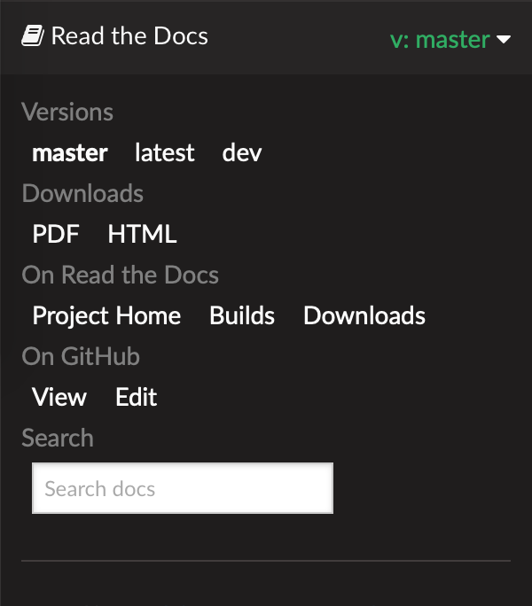

1. 이 문서에 대하여
OpenFAST 문서는 다음에서 호스팅됩니다. 문서 읽기이며 두 가지 모두에서 자동으로 생성됩니다. 기본 및 개발자 새로운 커밋이 추가될 때마다 분기됩니다. 페이지 왼쪽 하단에 있는 막대를 클릭하면 저장소 분기 선택, 문서 다른 형식(PDF, HTML, EPub) 다운로드 및 기타 관련 웹사이트 링크 옵션이 포함된 패널(아래 이미지 참조)이 표시됩니다.


여기에서 OpenFAST 개발자 문서가 향상되는 동안 개발자는 레거시 FAST v8을 참조하는 것이 좋습니다.
NWTC Programmer's Handbook. OpenFAST 획득 및 설치에 대한 지침은 다음에서 확인할 수 있습니다.
OpenFAST 설치, 자동화된 테스트를 통한 설치 확인을 위한 문서는 다음 위치에 있습니다. OpenFAST 테스트.
이 문서의 대부분은 두 부분으로 나누어져 있습니다.
최종 사용자를 대상으로 하는 이 부분에서는 이론 및 검증 문서뿐만 아니라 OpenFAST 및 기본 모듈의 사용에 관한 자세한 문서를 제공합니다.
개발자 가이드는 OpenFAST 내에서 제공되는 기능을 확장하려는 사용자를 대상으로 합니다. 여기서는 코드 구조, 다양한 클래스에서 지원되는 API에 대한 세부 정보와 Doxygen을 사용하여 추출한 소스 코드 문서에 대한 링크를 찾을 수 있습니다.